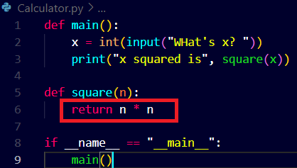

That means whatever programs till now we have created we will test all those programs by writing test_program programs.
For example we wrote a simple Calculator.py file program to create a simple calculator to calculate square of the given input integer.
The syntax looked like this.. with a little bit of modification of our latest conventions the name==main, so that when we import it in another program it works perfectly fine.

Now we will create a test_calc.py for writing test program for our Calculator.py. See how!
Here we have created a simple test for testing only two cases at the point of Calculator.py .
- We do not get anything in output as the tests are passed successfully.


But now for instance we introduce a bug in our original code Calculator.py see the bug,
we change the multiplication sign with addition so now, watch how the test_calc runs!!


It seems that from the two test cases one succeeded and one did not.
Probably because 2+2=4 same as 2*2=4 but 3*3=9 and 3+3=6.
That's why only one if statement got executed.
Now when you compare the actual code versus the test code we see that the number of lines used to write the program is much more than the actual program written.
Our goal must be to write a fewer lines of code for the test code.
So what another technique can we use, so it comes out that python has another keyword called "assert".
"assert" basically boldly claims something is true: if something is true nothing is going to happen.
But if the condition is false, in python using "assert" you are literally going to see an error.
See how we use it...


This was an AssertionError, a new type of error amongst the previous ones we have already seen.
How were we handling errors in python?
Yes, using the try: and except: method. Watch now we handle AssertionError.


Our code is now more user friendly but Ofcourse not feasible as we need to test infinite cases.

This is a solution of a problem I encountered during installation of pytest.
This what the test looks like; we use the pytest module of python to test the following cases of or Calculator.py file